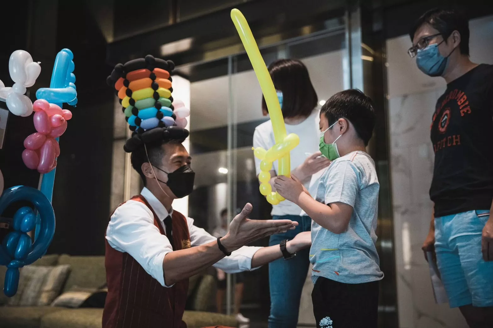

氣球大叔 Sony × 惠宇大境秋收樂市｜竹北親子活動紀錄
氣球魔術現身秋日市集，陪伴孩子歡笑一整天。讓社區更有溫度。
📍 地點：新竹縣竹北市 惠宇大境
親子秋日市集 × 氣球魔術登場
位於竹北的惠宇大境社區，在秋意漸濃的 9 月舉辦了一場溫馨的「秋收樂市」活動。活動現場充滿文創攤位與親子手作，氣球大叔 Sony 特別受邀登台演出，以生動的氣球魔術作為活動壓軸，成功為現場匯聚滿滿的人氣與笑聲。

孩子們的笑聲，是最好的服務回饋
演出過程中，Sony 邀請多位小朋友上台參與，每一個手折氣球道具都成為孩子們眼中的寶藏。透過專業的控場技巧，現場家長與長輩們紛紛拿出手機，記錄下孩子最純粹的快樂瞬間，場面既溫馨又感人。
- 🎈 視覺焦點： 快速手折彩虹帽與氣球寶劍，視覺張力十足。
- 🎉 三代同樂： 互動內容老少咸宜，帶動社區居民間的情感交流。
- 🎨 跨界融合： 表演與市集手作攤位完美串聯，打造完整的家庭午后時光。
打造竹北社區親子活動新指標
本次活動成功結合建商品牌形象與家庭娛樂，讓在地民眾留下深刻印象。專業的氣球演出不僅是娛樂，更是提升社區凝聚力的催化劑，讓惠宇大境的居民體驗到一場高品質的秋季盛事。
「孩子看到氣球真的太開心了，Sony 大叔的表演很有質感，讓整個市集更有主題感！」－ 現場家長回饋分享
結語：社區營造中的亮點演出首選
氣球大叔 Sony 不只提供氣球魔術，更擅長透過表演與觀眾建立深刻連結。不論是建案行銷、社區入厝活動、節慶市集或企業家庭日，我們都能為您量身打造互動內容，讓品牌與住戶之間建立最美好的回憶連結。
🔥 更多新竹在地與市集活動推薦：
- 👉 竹北同品牌案例：惠宇謙和春季市集｜氣球魔術互動與市集演出回顧
- 👉 新竹婚禮迎賓：新竹港南艾茉爾婚禮｜造型氣球迎賓與現場互動
- 👉 熱門市集案例：桃園綠色生活悠遊節｜蜜蜂氣球人與親子魔術互動